측량및지형공간정보기사 (2022-03-05 기출문제)
1과목: 측지학 및 위성측위시스템
1. 연직선편차에 대한 설명 중 옳지 않은 것은?
- 진북방위각과 도북방위각의 차이이다.
- 기준타원체와 지오이드의 차이에 의해 발생한다.
- 연직선(vertical line)과 법선(normal line)의 차이이다.
- 측지위도와 천문위도의 차이이다.
(정답률: 알수없음)

2. 중력보정에 대한 설명으로 옳지 않은 것은?
- 고도(elevation)보정-지표상의 한점에서 측정된 중력값을 지오이드 면상의 중력값으로 보정하는 것이다.
- 지형(terrain)보정-지형이 평평하다는 가정을 보정해 주는 것으로 그 값을 항상 (-)가 된다.
- 부게(bouger)보정-측정점과 지오이드면 사이에 존재하는 물질이 중력에 미치는 영향에 대한 보정이다.
- 아이소스타시(isostatic)보정-아이소스타시 지각균형 이론에 의한 보정이다.
(정답률: 알수없음)
3. GNSS 측위 방식에 관한 설명으로 옳지 않은 것은?
- 단독측위 시 많은 수의 위성을 동시에 관측하므로 위성의 궤도정도 오차는 측위결과에 영향이 거의 없어 무시할 수 있다.
- DGPS는 미지점과 기지점에서 동시에 관측을 실시하여 양 측점에서 관측한 정보를 모두 해석함으로써 미지점의 위치를 결정한다.
- GMSS 이동측량은 관측하는 전 과정동안 모든 수신기에서 최소 4개 이상의 위성들로부터 송신되는 위성신호를 동시에 수신하여야 한다.
- 네트워크 RTK측량(이동측위법)은 3~4급 공공삼각점측량에 적용할 수 있다.
(정답률: 알수없음)
4. 인공위성의 케플러 궤도요소에 해당 되지 않는 것은?
- 궤도타원의 장반경
- 인공위성 질량
- 근지점 인수
- 궤도면 경사각
(정답률: 알수없음)
5. 다음 중 이론적으로 중력과 만유인력이 같은 지점은?
- 적도
- 북위 45°
- 남위 45°
- 북극
(정답률: 알수없음)
6. 반송파를 이용한 상태측위에 대한 설명으로 옳지 않은 것은?
- 위성과 수신기의 반송파 위상 차이를 이용하여 수신기의 위치를 결정한다.
- 센티미터 수준의 정확도 확보는 정확한 미지정수 결정으로 가능하다.
- 반송파는 전리층에서 코드의 경우와 반대로 빠르게 진행한다.
- 반송파는 코드의 경우보다 다중경로 오차가 크다.
(정답률: 알수없음)
7. 지표면상 구면삼각형의 각을 관측한 결과가 ∠A=50°20', ∠B=66°25', ∠C=64°35'이고 지구의 곡률반지름이 6250kb라고 할 때, 구면삼각형 ABC의 면적은?
- 266000km2
- 422000km2
- 909025km2
- 944000km2
(정답률: 알수없음)
8. 평면직교좌표의 원점에서 동쪽에 있는 A점에서 B점방향의 자북방위각을 관측한 결과가 89°10‘ 25“이었다. A점에서의 자침편차가 5°W일 때 진북방위각은?
- 84°10‘ 25“
- 59°02‘ 25“
- 89°30‘ 25“
- 94°10’ 25”
(정답률: 알수없음)
9. 측지선에 대한 설명으로 옳지 않은 것은?
- 두 점이 거의 같은 위도 상에 있을 경우에 측지선은 수직절선을 교차할 수도 있다.
- 측지선은 두 수직절선 사이의 각을 2:1의 비율로 분할한다.
- 측지선은 직접 측정하기 어렵다.
- 측지선은 단일곡률을 갖는 곡선이다.
(정답률: 알수없음)
10. 측지원점을 정의하기 위해 필요한 요소로 거리가 먼 것은?
- 표준중력
- 타원체의 장반경
- 원방위각
- 원점의 경도
(정답률: 알수없음)
11. 자침의 복각에 대한 설명으로 옳지 않은 것은?
- 복각은 자북으로 갈수록 커진다.
- 복각은 진북에서 최대가 된다.
- 복각은 적도 지방에서는 거의 9에 가깝다.
- 복각은 지각 내에서 철광이 있으면 비정상적으로 크게 나타난다.
(정답률: 알수없음)
12. GNSS 고정밀 측위에서 사용하는 차분(differencing) 기법에 대한 설명으로 옳지 않은 것은?
- 단순차분은 두 개의 서로 다른 수신기에서 하나의 위성을 동시에 관측할 때 두 개의 수신기에서 수신되는 신호의 순간적인 위상을 측정하여 그들의 차를 구하는 것이다.
- 이중차분은 하나의 위성에 대해 단순차분을 수행하고 동시에 또 다른 위성에 대하여 똑같은 단순차분을 시행한 후 두 방정식의 대수적 차에 의하여 결정하는 방법이다.
- 이중차분은 미확정 정수를 제거함으로써 사이클 슬립의 문제점을 해결할 수 있다.
- 삼중차분은 수신기, 위성, 시간이 모두 계산의 주체가 되며, 이중차분을 두 번의 연속된 시간에 대해 두 번 시행하여 그 차를 구하여 얻는 방법이다.
(정답률: 알수없음)
13. GNSS의 3가지 구성요소에 해당하지 않는 것은?
- 우주부문
- 사용자부문
- 제어(관제)부문
- 장비부문
(정답률: 알수없음)
14. GPS의 군사용 신호를 이용할 수 없도록 제한하는 암호화 체계는?
- Delta Process
- Anti-Spoofing
- Epsilon Process
- Selective Availability
(정답률: 알수없음)
15. GPS 측량의 기준좌표계인 WGS84에 대한 설명으로 옳지 않은 것은?
- 전 세계적으로 측정해온 지구의 중력장과 지구 모양을 근거로 해서 만들어진 좌표계이다.
- C축은 국제시보국(BIH)에서 정의한 본초자오선과 평행한 평면이 지구 적도면과 교차하는 선이다.
- Y축은 X축과 Z축이 이루는 평면에 서쪽으로 수직인 방향(서쪽으로 90°)으로 정의된다.
- Z축은 1984년 국제시보국(BIH)에서 채택한 평균극축(CTP)과 평행하다.
(정답률: 알수없음)
16. 탄성파를 이용하여 파악하는 주요 사항으로 옳은 것은?
- 지표상 두 점간 거리의 정밀 측정
- 인공위성을 이용한 지구상 점의 좌표 측정
- 지질구조의 파악
- 파고의 측정
(정답률: 알수없음)
17. GNSS 측량의 특징에 대한 설명으로 옳지 않은 것은?
- 장소에 상관없이 실내ㆍ외에서 모두 측량할 수 있다.
- 날씨와 무관하게 측량할 수 있다.
- 24시간 연속적으로 측량할 수 있다.
- 전 지구적으로 측량할 수 있다.
(정답률: 알수없음)
18. 우리나라 평면직각좌표계 4개의 중앙 자오선 축척계수는?
- 0.9996
- 0.9999
- 1.0000
- 1.1001
(정답률: 알수없음)
19. 평면측량에서 1/40000까지 거리의 허용오차를 둔다면 지구를 평면으로 볼 수 있는 한계는 약 얼마인가? (단, 지구의 반지름은 6370km로 가정한다.)
- 31km
- 65km
- 98km
- 110km
(정답률: 알수없음)
20. GNSS 위성신호가 수신기 주변 장애물에 반사되어 취득됨으로 인해 발생하는 관측오차는?
- 다중경로오차
- 위성시계오차
- 위성궤도오차
- 수신기오차
(정답률: 알수없음)
2과목: 응용측량
21. 평지에 길이 50m, 폭 8m인 도로를 건설하기 위해 2m 높이의 성토가 필요하다면 성도경사를 1:1.5로 할 때 필요한 성토량은?
- 467m3
- 930m3
- 1100m3
- 2200m3
(정답률: 알수없음)
22. 수애선(水涯線) 및 수애선 측량에 관한 설명으로 옳지 않은 것은?
- 수면과 하안과의 경계선을 수애선이라 한다.
- 수애선 측량에는 심천측량에 의한 방법과 동시관측에 의한 방법이 있다.
- 수애선은 하천 수위에 따라 변동하는 것으로 최저수위에 의하여 정해진다.
- 심천측량에 의한 방법을 이용할 때에는 수위의 변화가 적은 시기에 심천측량을 행하여 하천의 횡단면도를 먼저 만든다.
(정답률: 알수없음)
23. 댐의 장기적 안정성을 조사하기 위한 변위측량에 대한 설명으로 틀린 것은?
- 삼각측량에 의하여 댐의 수평방향의 절대 변위를 관측할 수 있다.
- 댐 표면과 부근의 고정점을 이용하여 반복 관측한다.
- 지형 및 정확도면에서 3개 이상의 고정점을 이용한다.
- 변위측량의 절대 위치결정에 대한 정확도는 5.0~10.0cm 정도이다.
(정답률: 알수없음)
24. 다음 중 완화곡선의 종류로만 짝지어진 것은?
- 클로소이드, 3차 포물선, 렘니스케이트 곡선
- 3차 포물선, 렘니스케이트 곡선, 반향곡선
- 클로소이드, 3차 포물선, 반향곡선
- 단곡선, 원곡선, 배향곡선
(정답률: 알수없음)
25. 그림과 같은 삼각형 ABC의 면적을 1:3으로 분할할 경우에 P점의 좌표는? (단, 좌표의 단위는 m이다.)
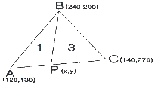
- (125, 165)
- (125, 200)
- (130. 165)
- (130, 200)
(정답률: 알수없음)
26. 터널 내 고저차 측량에서 A, B 측점이 천정에 설치되어 있을 때 두 점 A, B 간의 경사거리가 30m, 기계고가 1.40m, 시준고 1.35m, 연직각이 +7°라고 하면 A점과 B점의 고저차는?
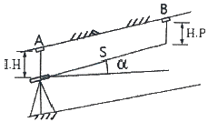
- 2.5m
- 3.2m
- 3.5m
- 3.6m
(정답률: 알수없음)
27. 철도, 도로 및 수로 등을 건설할 때 토량을 계산하기 위해 가장 적합한 체적 산정방법은?
- 점고법
- 등고선법
- 유토곡선법
- 단면법
(정답률: 알수없음)
28. 클로소이드의 매개변수 A=60이고, 곡선길이가 40m인 클로소이드 곡선의 반지름은?
- 60m
- 90m
- 120m
- 150m
(정답률: 알수없음)
29. 수면으로부터 수심 H인 하천에서 2점법으로 평균, 유속을 구할 경우, 유속의 관측 지점은?
- 수면으로부터 0.2H, 0.8H인 지점
- 수면으로부터 0.4H, 0.8H인 지점
- 수면으로부터 0.2H, 0.6H인 지점
- 수면으로부터 0.4H, 0.6H인 지점
(정답률: 알수없음)
30. 그림에서 V지점에서 해당하는 종단곡선상의 계획고는? (단, 종단곡선은 2차 포물선이고, A점의 계획고=65.50m)
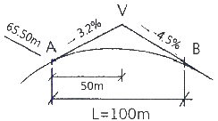
- 66.14m
- 66.57m
- 66.83m
- 67.49m
(정답률: 알수없음)
31. 4각형 ABCD의 좌표가 아래와 같을 때 □ABCD□의 면적은?
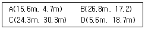
- 287.89m2
- 277.89m2
- 575.78m2
- 555.77m2
(정답률: 알수없음)
32. 하천측량의 종단측량과 횡단측량에 관한 설명으로 틀린 것은?
- 하천중심선에 직각인 방향으로 양안의 제방 어깨 또는 경사면 등에 거리표를 설치한다.
- 종ㆍ횡단면도를 작성할 때, 종ㆍ횡의 축척을 같게 한다.
- 수준기표는 국가기준점의 수준점과 결합시킨다.
- 종단측량은 왕복측량을 원칙으로 한다.
(정답률: 알수없음)
33. 단곡선설치에서 I=70°, R=200m 일 때 접선길이(TL)와 외할(R)로 옳은 것은?
- TL=140.04m, E=42.15m
- TL=140.04m, E=44.15m
- TL=150.15m, E=42.15m
- TL=150.15m, E=44.15m
(정답률: 알수없음)
34. 해양에서 수침측량을 할 경우에 음량측심 장비로부터 취득한 데이터에서 보정하여야 할 항목이 아닌 것은?
- 굴절오차
- 음속 변화
- 기계오차
- 조석
(정답률: 알수없음)
35. 반지름이 동일하지 않은 2개의 원곡선이 그 접속점에서 공통접선을 갖고, 이것들의 중심이 공통접선의 반대쪽에 있는 곡선은?
- 활권선
- 고차포물선
- 반향곡선
- 복심곡선
(정답률: 알수없음)
36. 터널의 양쪽 입구 A와 B를 연결하는 지상 골조측량으로 두 점의 좌표 A(-2357.56m, -1763.26m), B(-1385.78m, -987.33m)와 임의점 P에 대한
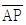
의 방위각이 176°27‘ 32“ 이었다면 ∠PAB는?- 38°36’ 49“
- 137°50‘ 39“
- 151°16‘ 36“
- 215°04‘ 21“
(정답률: 알수없음)
37. 교점(IP)의 위치가 기점으로부터 143m, 곡선반지름 100m, 교각 58°인 단곡선을 편각법에 의하여 설치할 때 측점간의 거리를 20m라고 한다면 시단현의 길이는?
- 10.43m
- 11.43m
- 12.43m
- 13.43m
(정답률: 알수없음)
38. 노선측량에 대한 설명으로 옳지 않은 것은?
- 완화곡선의 곡선반지름은 완화곡선시점에서 무한대, 종점에서 원곡선의 반지름으로 된다.
- 도로 곡선부에 편경사를 설치하는 주된 목적은 노면의 배수를 위한 것이다.
- 완화곡선에 연한 곡선반지름의 감소율은 캔트의 증가율과 같다.
- 완화곡선의 접선은 시점에서 직선에, 종점에서 원호에 접한다.
(정답률: 알수없음)
39. 축척 1:600 도면에서 측정한 값이 그림과 같을 때 ABCD의 실제면적은?
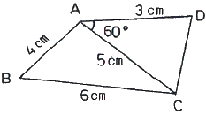
- 16m2
- 59m2
- 164m2
- 591m2
(정답률: 알수없음)
40. 해저바닥의 저질채취 방법에 속하지 않는 것은?
- 그랩(grab)
- 드래지(dredge)
- 코어(core)
- 채수기(water sampler)
(정답률: 알수없음)
3과목: 사진측량 및 원격탐사
41. 항공사진 판독의 일반적인 순서를 나열한 것으로 가장 적합한 것은?
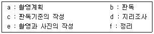
- a-c-d-e-b-f
- a-e-c-b-d-f
- c-a-d-b-e-f
- c-a-e-d-b-f
(정답률: 알수없음)
42. 그림과 같이 3×3 크기의 격자(raster)에 이동평균필터(moving average filtrt)를 적용할 경우 중앙 위치에 새롭게 할당될 픽셀 값은?
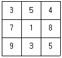
- 3
- 4
- 5
- 6
(정답률: 알수없음)
43. 대공표지에 대한 설명으로 틀린 것은?
- 대공표지는 사진상에서 정확하게 그 위치를 결정하고자 할 때 설치한다.
- 설치 장소의 상공은 45° 이상의 시계를 확보하여야 한다.
- 대공표지를 하고자 하는 점이 자연점으로 표지를 설치하지 않고도 사진상에 명료하게 확인되는 경우에는 생략할 수 있다.
- 대공표지는 항공사진 촬영이 끝나면 즉시 철거하여야 한다.
(정답률: 알수없음)
44. 항공사진촬영의 과고감에 대한 설명으로 옳지 않은 것은?
- 촬영기선길이가 같을 때 촬영고도가 낮은 경우가 높은 경우보다 과고감이 크다.
- 렌즈 초점거리가 짧은 경우의 사진이 긴 경우의 사진보다 과고감이 크다.
- 입체시할 경우에 눈의 위치가 높아짐에 따라 과고감이 커진다.
- 촬영고도가 같을 때 촬영기선이 짧은 경우가 긴 경우보다 과고감이 크다.
(정답률: 알수없음)
45. 해석적인 사진표정 중 내부표정에서 고려해야 할 사항이 아닌 것은?
- 피사체의 표고
- 지구의 곡률
- 렌즈의 왜곡
- 대기굴절
(정답률: 알수없음)
46. KOMPSAT(한국형다목적실용위설, 아리랑위성) 중 SAR(Synthetic Aperture Radar) 영상을 제공하는 것은?
- KOMPSAT-1
- KOMPSAT-2
- KOMPSAT-3
- KOMPSAT-5
(정답률: 알수없음)
47. 항공사진의 특수 3점으로만 짝지어진 것은?
- 주점, 연직점, 등각점
- 주점, 중심점, 등각점
- 표정점, 연직점, 등각점
- 주점, 표정점, 연직점
(정답률: 알수없음)
48. 영상분류(image classification)에서 감독분류(supervised classification)기법을 위해 필수적인 사항은?
- 표본영상 자료
- 좌표변환식
- 지상측량 성과
- 수치지도
(정답률: 알수없음)
49. 다음 전자파의 파장대 중 육지와 수역(물)의 구분이 가장 잘 구분되는 파장대는?
- 녹색 파장대
- 적색 파장대
- 청색 파장대
- 근적외선 파장대
(정답률: 알수없음)
50. 영상정합방법의 분류에 속하지 않는 것은?
- 기복기반정합
- 형상기준정합
- 관계형정합
- 영역기준정합
(정답률: 알수없음)
51. 항공사진의 중복도에 대한 설명으로 옳은 것은?
- 촬영 진행방향으로 40%, 인접 코스간 30%를 표준으로 한다.
- 촬영 진행방향으로 40%, 인접 코스간 60%를 표준으로 한다.
- 촬영 진행방향으로 60%, 인접 코스간 30%를 표준으로 한다.
- 촬영 진행방향으로 60%, 인접 코스간 60%를 표준으로 한다.
(정답률: 알수없음)
52. 절대표정의 내용이 아닌 것은?
- 축척의 결정
- 수준면의 결정
- 위치의 결정
- 종시차의 결정
(정답률: 알수없음)
53. 초점거리 153mm인 카메라로 평탄한 토지를 촬영한 항공사진의 촬영경사가 2°이었다면 주점으로부터 등각점까지 거리는?
- 1.6mm
- 2.2mm
- 2.7mm
- 5.3mm
(정답률: 알수없음)
54. 초점거리가 서로 다른 2대의 사진기로 취득한 2장의 사진에 대해 공선조건식을 적용하는 경우에 대한 설명으로 옳은 것은?
- 1쌍의 공선조건식에 2개의 초점거리를 평균한 값을 사용한다.
- 1쌍의 공선조건식에 서로 다른 초점거리를 그대로 사용한다.
- 1쌍의 공건조건식에 왼쪽 사진의 초점거리를 선택하여 사용한다.
- 1쌍의 공전조건식에 오른쪽 사진의 초점거리를 선택하여 사용한다.
(정답률: 알수없음)
55. 해발 1200mm에서 초점거리 153mm로 촬영한 경사사진에서 최대경사선을 따라 활주로가 촬영되어 있다. 사진 상에서 활주로의 폭이 주점에서 4.5mm, 등각점에서 4.6mm, 연직점에서 4.7mm이었다면 이 활주로의 해발 고도는 약 얼마인가? (단, 활주로의 실제 폭은 34m로 일정하고 경사가 없다.)
- 44m
- 69m
- 93m
- 116m
(정답률: 알수없음)
56. 촬영고도 800m에서 촬영한 연직사진에서 건물의 윗부분이 주점으로부터 75mm 떨어져 나타나 있으며, 건물의 기복변위가 7.15mm일 때 건물의 높이는?
- 67.0m
- 76.3m
- 83.9m
- 149.2m
(정답률: 알수없음)
57. 항공삼각측량의 조정방법으로 사진을 기본단위로 하며 정확도가 가장 높은 것은?
- 독립모형법(Independent Model Triangulation)
- 부등각사상변환법(Affine Transformation)
- 광속조정법(Bundle Adjustment)
- 다항식조정법(Polynomial Adjustment)
(정답률: 알수없음)
58. 평균표고 120m인 지형을 초점거리 120mm인 사진기로 촬영고도 3300m에서 촬영한 항공사진 1장이 포함하는 면적은? (단, 사진크기는 23cm×23cm이다.)
- 32.42km2
- 37.15km2
- 40.01km2
- 52.35km2
(정답률: 알수없음)
59. 공간을 크기와 모양이 다양한 삼각형으로 분할하여 생성된 공간자료구조의 일종으로 경사와 경사방향을 설정하고, 효율적으로 지형의 높낮이나 음영을 표현할 수 있는 방법은?
- DEM(Digital Elevation Model)
- DGM(Digital Geographic Model)
- TIN(Triangulated Irregular Network)
- TRN(Triangulated Regular Network)
(정답률: 알수없음)
60. 회전주기가 일정한 위성을 이용한 원격탐사(remote sensing)의 특징으로 옳지 않은 것은?
- 짧은 기간 내에 넓은 지역을 동시에 관측할 수 있으며 반복관측이 가능하다.
- 회전주기가 일정하므로 원하는 지점 및 시기에 관측이 용이하다.
- 관측이 좁은 시야각으로 얻어진 영상은 정사투영에 가깝다.
- 탐사된 자료가 즉시 이용될 수 있으며 재해 환경문제 해결에 편리하다.
(정답률: 알수없음)
4과목: 지리정보시스템
61. 위상관계(Topology)를 설명하는 보기의 그림 중 특성이 다른 것은?
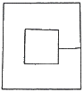
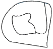
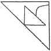
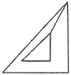
(정답률: 알수없음)
62. 래스터(raster) 데이터의 특징으로 옳지 않은 것은?
- 격자의 크기 조절로 자료용량의 조절이 가능하다.
- 자료의 데이터구조가 매우 복잡하며, 자료의 생성이 어렵다.
- 다양한 공간적 편의가 격자 형태로 나타나며, 자료의 조작과정이 용이하다.
- 래스터자료는 주로 네모난 형태를 가지기 때문에 벡터자료에 비해 미관상 매끄럽지 못하다.
(정답률: 알수없음)
63. 래스터 기반의 지리자료 처리과정에서 사용되는 국지 인접 연산(또는 초점 연산)에 관한 설명으로 틀린 것은?
- 가장 많이 사용되는 윈도우의 크기는 7 × 7 셀이다.
- 공간 집합(spatial aggregation)을 위한 연산이다.
- 잡음(noise)과 결점(defect) 제거를 위한 필터링이다.
- 경사와 경사방향 결정을 위한 연산이다.
(정답률: 알수없음)
64. 입력이 어느 하나라도 1이면 출력이 1이 되고, 입력이 모두 0일 때만 출력이 0이 되는 논리연산자는? (단, 참은 1, 거짓은 0)
- OR
- AND
- NOT
- XOR
(정답률: 알수없음)
65. 다음 중 점 자료의 밀도분석 방법과 관련이 있는 것은?
- 방안분석(Quadrat analysis)
- 프랙탈 차원(Fractal dimension)
- 네트워크 분석(Network analysis)
- 쿼드트리(Quadtree)
(정답률: 알수없음)
66. 지리정보시스템(GIS)에서 도로에 대한 데이터베이스를 구축할 때, 도로포장 일자, 포장 종류, 차로 수, 보수 일자와 같은 정보를 무엇이라 하는가?
- 위상 정보
- 지리적 위치
- 공간적 관계
- 속성 정보
(정답률: 알수없음)
67. 지리정보시스템(GIS)의 표준화에 대한 설명으로 옳지 않은 것은?
- SDTS는 GIS 표준 포맷의 예이다.
- 경제적이고 효율적인 GIS 구축이 가능하다.
- 하나의 기관에서 구축한 데이터를 많은 기관들이 공유하여 사용할 수 있다.
- 하드웨어(H/Q)나 소프트웨어(S/W)에 따라 이용 가능한 포맷을 달리한다.
(정답률: 알수없음)
68. 다음 중 지리정보시스템(GIS)의 자료출력용 하드웨어가 아닌 것은?
- 모니터
- 플로터
- 프린터
- 디지타이저
(정답률: 알수없음)
69. 공간정보의 레이어 편집 중 그림과 같이 동일한 데이터를 하나로 합치는 방법은?
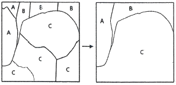
- Dissolve
- Erase
- Clip
- Eliminate
(정답률: 알수없음)
70. 국토교통부에서 제공하는 3차원 공간정보서비스 오픈플랫폼의 명칭은?
- 브이월드
- 위성기준서비스
- 항공사진서비스
- 구글 3D
(정답률: 알수없음)
71. 수치지도의 등고선 레이어를 이용하여 수치표고모델(DEM)을 생선할 경우 필요한 자료처리 방법은?
- 보간법
- 일반화 기법
- 분류법
- 자료압축법
(정답률: 알수없음)
72. 수치화된 공간정보 데이터의 관리 및 활용 편의를 위해 제공되는 데이터의 제작, 정의 및 이력과 관련된 정보를 무엇이라 하는가?
- 헤더 데이터(header data)
- 오픈 데이터(open data)
- 이력 데이터(history data)
- 메타 데이터(meta data)
(정답률: 알수없음)
73. 다음의 데이터를 이용하여 다양한 분석을 할 때 데이터의 문제점이라 할 수 없는 것은?
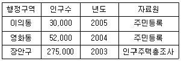
- 행정구역 단계의 불일치
- 년도의 불일치
- 인구수의 불일치
- 자료원 불일치
(정답률: 알수없음)
74. 지리정보시스템(GIS)의 공간분석기능에 대한 설명으로 관계가 옳은 것은?
- 버퍼분석(Buffering Analysis) - 가시권분석, 표면 모델링, 3차원 가시와, 경사도 분석
- 지형분석(Topographic Analysis) - 영향권분석
- 망분석(Network Analysis) - 연결성, 방향성, 최단경로, 최적경로의 분석
- 중첩분석(Overlay Analysis) - 거리, 면적, 둘레, 길이, 무게중심 등의 정량적 분석
(정답률: 알수없음)
75. 국가공간정보기반(NSDI)의 구성 요소가 아닌 것은?
- 공간정보 기술
- 공간정보 관련 표준
- 공간분석 방법
- 공간정보 관련 법제도
(정답률: 알수없음)
76. 불규칙삼각망(TIN)에 대한 설명으로 옳지 않은 것은?
- 적은 자료로서 복잡한 지형을 효율적으로 나타낼 수 있다.
- 세 점으로 연결된 불규칙 삼각형으로 구성된 삼각망이다.
- 격자구조로서 연결성이나 위상정보가 존재하지 않는다.
- TIN모형을 이용하여 경사의 크기(gradient)나 경사의 방향(aspect)을 계산할 수 있다.
(정답률: 알수없음)
77. 지리정보시스템(GIS) 데이터로 사용되는 수치지형도의 오류가 아닌 것은?
- 두 개의 등고선이 상호 교차
- 인접 지적필지 경계 불일치
- 삼각점 높이값 미입력
- 표고점 높이값 누락
(정답률: 알수없음)
78. 지리정보시스템(GIS)에 대한 설명 중 틀린 것은?
- 인간의 의사결정능력의 지원에 필요한 지리정보의 관측과 수집에서부터 보존과 분석, 출력에 이르기까지 일련의 조작을 위한 정보시스템이다.
- 격자방식을 통해 벡터방식에 비해 정확한 경계선 추출이 가능하다.
- 지리정보는 GIS에서 대상으로 하는 모든 정보를 의미한다.
- 지리정보의 대표적인 항목은 지리적 위치, 관련 속성정보, 공간적 관계, 시간이다.
(정답률: 알수없음)
79. 보기가 공통적으로 설명하는 것은?
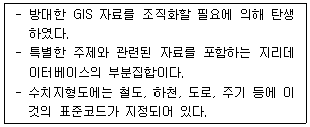
- 도엽
- 레이어
- 메타데이터
- 기본지리정보
(정답률: 알수없음)
80. 지리정보시스템(GIS)의 DB구축 및 활용이 개인컴퓨팅 환경에 얽매이지 않고 웹(web)을 통해 사회 다수의 이용자에게 제공되는 GIS환경은?
- Institutional GIS
- Internet GIS
- GNSS
- Project GIS
(정답률: 알수없음)
5과목: 측량학
81. 삼각망의 특징에 대한 설명으로 옳지 않은 것은?
- 단열삼각망은 같은 거리에 대하여 측점수가 가장 적으므로 측량은 간단하여 경제적이나 조건식의 수가 적어서 정확도가 낮다.
- 사변형삼각망은 조건식의 수가 많아서 다른 삼각망에 비해 정확도가 높다.
- 유심삼각망은 면적이 넓고 광대한 지역의 측량에 좋다.
- 사변형삼각망은 폭이 좁고 길이가 긴 도로, 하천, 철도 등의 측량을 시행할 경우에 주로 사용된다.
(정답률: 알수없음)
82. 다각측량에서 트래버스망을 위하여 선점할 때 유의할 사항에 대한 설명으로 옳지 않은 것은?
- 정확도가 요구되는 경우에 측점 선정은 개방 트래버스가 되도록 한다.
- 측량표가 안전하게 보존될 수 있는 곳으로 한다.
- 측점은 앞으로의 세부측량에 편리한 곳으로 한다.
- 측점은 관측할 때 지장이 없는 곳으로 한다.
(정답률: 알수없음)
83. A, B의 표고가 각각 802m, 826m이고 A, B의 도상수평거리가 20mm일 때 A점으로부터 820m 등고선까지의 도상거리는?
- 30mm
- 25mm
- 20mm
- 15mm
(정답률: 알수없음)
84. 수치표고모델(DEM)에 대한 설명으로 틀린 것은?
- 격자의 구성 상태에 따라 정규격자형과 불규칙격자형으로 구분할 수 있다.
- 불규칙삼각망은 모든 DEM 점들을 서로 연결하여 형성한 삼각형들의 집합체를 말한다.
- 정규격자에 의한 등고선 작성은 격자점 사이에 급격한 경사지나 볼록한 지형 혹은 오목한 지형이 있을 경우의 표현에 불규칙격자형보다 적합하다.
- 정규격자형은 작업 지역을 일정한 간격으로 구분하여 각 모서리 점의 표고를 표시하는 방법이다.
(정답률: 알수없음)
85. 페합트래버스의 전체 관측선의 총 길이가 2.4km일 때, 폐합비를 1/6000로 제한하기 위한 도상 최대 폐합오차는? (단, 도면축척=1:500)
- 0.8mm
- 1.6mm
- 2.4mm
- 2.8mm
(정답률: 알수없음)
86. 수준측량의 용어에 대한 설명으로 틀린 것은?
- 전시 : 표고를 구하려는 점에 세운 표척의 눈금을 읽은 값
- 이기점 : 기계를 옮기기 위하여 어떠한 점에서 전시와 후시를 모두 취하는 점
- 중간점 : 어떤 지점의 표고를 알기 위하여 표척을 세워 전시만을 취하는 점
- 후시 : 측량해 나가는 방향을 기준으로 기계의 후방을 시준한 값
(정답률: 알수없음)
87. 삼각망을 구성하는 데 있어서 내각을 작게 하는 것이 좋지 않은 이유에 대한 설명으로 옳은 것은?
- 측각하기가 불편하기 때문이다.
- 경도, 위도 또는 좌표계산이 불편하기 때문이다.
- 한 삼각형에 있어서 작은 각이 있으면 반드시 다른 각 중에서 큰 각이 있기 때문이다.
- 한 기지변으로부터 타변을 sine 법칙으로 구할 때 오차가 많이 생기기 때문이다.
(정답률: 알수없음)
88. 그림에서 ∠AOB, ∠BOC, ∠AOC를 관측한 결과가 표와 같을 때, ∠AOC의 최확값은?
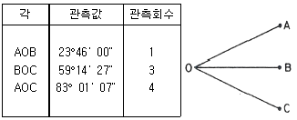
- 83°01‘ ⑤“
- 83°01‘ 03“
- 83°01‘ 01“
- 83°00‘ 59“
(정답률: 알수없음)
89. 연속적인 측량이 가능한 토털스테이션을 사용하여 등고선을 측정하는 방법에 대한 설명으로 옳지 않은 것은?
- 측점으로부터의 기계고를 측정한다.
- 프리즘의 높이는 임의로 하여 수시로 변경하는 것이 편리하다.
- 토털스테이션을 추적모드(tracking mode)로 설정하고 측정할 등고선의 높이를 입력한다.
- 높이를 알고 있는 측점에 토털스테이션을 설치하거나, 기준점을 관측하여 측점의 높이를 결정한다.
(정답률: 알수없음)
90. 측점 A, B의 좌표가 각각 A(390,0), B(0.780)일 때 측선 AB의 방위각은? (단, 좌표의 단위는 m이다.)
- 102°56‘ 56“
- 108°20‘ 12“
- 116°33‘ 54“
- 121°20‘ 15“
(정답률: 알수없음)
91. P점의 표고를 결정하기 위하여 수준점 A, B, C로부터 수준측량을 한 결과로 아래와 같은 관측값을 얻었다. P점 표고의 최확값은?
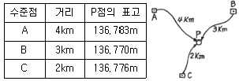
- 136.772m
- 136.776m
- 136.778m
- 136.783m
(정답률: 알수없음)
92. A점에서 2km 떨어져 있는 B점을 관측할 때 각도에 15“의 각 오차가 있다면 B점에서의 위치오차는?
- 20.8cm
- 19.7cm
- 14.5cm
- 11.5cm
(정답률: 알수없음)
93. 직접 수준측량에 있어서 전시와 후시의 시준거리를 같게 하는 이유로 거리가 먼 것은?
- 연직축 오차가 소거된다.
- 빛의 굴절오차가 소거된다.
- 지구의 곡률오차가 소거된다.
- 시준선이 기포관축과 평행하지 않는 경우의 오차가 소거된다.
(정답률: 알수없음)
94. 직사각형 모양의 토지를 거리측량하여 가로 106.85m와 세로 89.34m를 얻었다. 각각의 거리관측값에 +1.0cm의 오차가 있었다면 면적의 오차는?
- ±0.90m2
- ±1.39m2
- ±14.01m2
- ±139.28m2
(정답률: 알수없음)
95. 다음의 기본측량성과의 국외 반출 금지 조항에서 밑줄 친 경우에 해당되지 않는 것은?
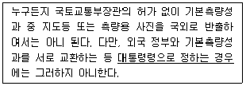
- 항공사진측량에 의하여 제작된 축척 1:25,000인 수치지형도를 국외로 반출하는 경우
- 대한민국 정부와 외국 정부 간에 체결된 협정 또는 합의에 따라 기본측량성과를 상호 교환하는 경우
- 정부를 대표하여 외국 정부와 교섭하거나 국제회의에 참석하는 자가 자료로 사용하기 위하여 측량용 사진을 반출하는 경우
- 관광객 유치와 관광시설 홍보를 목적으로 측량용 사진을 제작하여 반출하는 경우
(정답률: 알수없음)
96. 측량기술자의 의무에 대한 기준으로 옳지 않은 것은?
- 측량기술자는 다른 사람에게 측량기술 경력증을 빌려 주거나 자기의 성명을 사용하여 측량업무를 수행하게 하여서는 아니 된다.
- 측량기술자는 정당한 사유 없이 그 업무상 알게 된 비밀을 누설하여서는 아니 된다.
- 측량기술자는 신의와 성실로써 공정하게 측량을 실시해야 하며, 정당한 사유 없이 측량을 거부하여서는 아니 된다.
- 측량기술자는 셋 이상의 측량업자에게 소속될 수 없다.
(정답률: 알수없음)
97. “정당한 사유없이 측량의 실시를 방해한 자”에 대한 벌칙기준은?
- 3년 이하의 징역 또는 3000만원 이하의 벌금에 처한다.
- 2년 이하의 징역 또는 2000만원 이하의 벌금에 처한다.
- 1년 이하의 징역 또는 1000만원 이하의 벌금에 처한다.
- 300만원 이하의 과태료에 처한다.
(정답률: 알수없음)
98. “측량성과”의 용어 정의로 옳은 것은?
- 측량결과물을 얻을 때까지의 측량에 관한 작업의 기록
- 측량기본계획 수립에 따른 사업 목표
- 측량을 통하여 얻은 최종 결과
- 측량 외업에 직접 취득한 관측 결과
(정답률: 알수없음)
99. 기본측량성과 검증기관의 인력 및 장비 보유기준으로 옳은 것은?
- 토털스테이션(1급) : 2대 이상
- GPS수신기(1급) : 3대 이상
- 특급기술자 : 1인 이상
- 중급기술자 : 2인 이상
(정답률: 알수없음)
100. 국가기준점 중 지리학적 경위도, 직각좌표, 지구중심 직교좌표, 높이 및 중력 측정의 기준으로 사용하기 위하여 위성기준점, 수준점 및 중력점을 기초로 정한 기준점은?
- 우주측지기준점
- 통합기준점
- 지자기점
- 삼각점
(정답률: 알수없음)